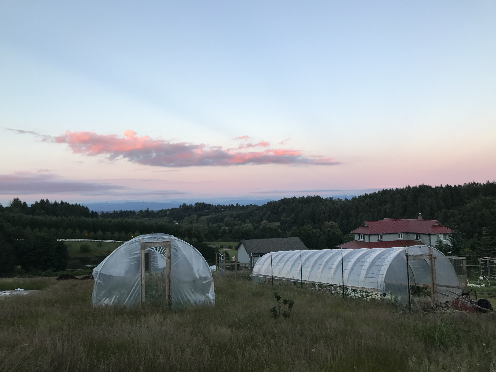
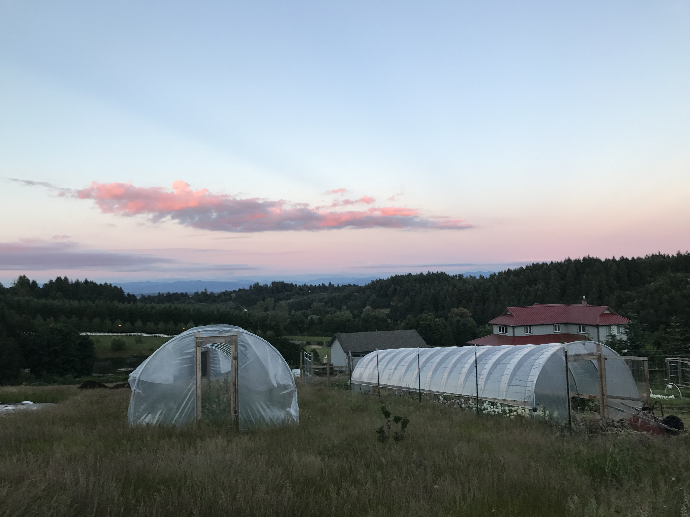

Sunday August 20th 4pm
Monday August 21st noon
Salem, Oregon

dinner • botanical drinks • flower crafts dancing • camping • breakfast • eclipse!
 


Join us at Witte Flower Farm for a celebration of the solar eclipse! Arrive on Sunday and enjoy a full course meal amid the flowers, botanical bar, dancing, music, and a bonfire! In the morning we'll have a waffle bar with all the fixin's, then watch the eclipse together. The farm is located directly in the path of the totality, so it should be a great show!
This is a campout! Bring your tent and pick a spot on the farm. Restrooms and porta potties will be available!
*** Rain or shine! *** in the off chance of bad weather, the show will go on!
$99
Contact: eplummer26@gmail.com